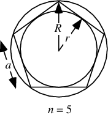

Regular Polygon:
A regular polygon is an n-sided polygon in which the sides are all the same
length and are symmetrically placed about a common center (i.e., the polygon is
both equiangular and equilateral).
Only certain regular polygons are "constructible" using the classical Greek
tools of the compass and straightedge.
The terms equilateral triangle and square refer to the regular 3- and
4-polygons, respectively.
The words for polygons with n>=5 sides (e.g., pentagon, hexagon, heptagon, etc.)
can refer to either regular or non-regular polygons, although the terms
generally refer to regular polygons in the absence of specific wording.
A regular n-gon is implemented in the Wolfram Language as RegularPolygon[n], or
more generally as RegularPolygon[r, n], RegularPolygon[{x, y}, rspec, n], etc.
The sum of perpendiculars from any point to the sides of a regular polygon of n
sides is n times the apothem.

PolygonInCircumscribe:
Let a be the side length, r be the inradius, and R the circumradius of a regular
polygon. Then
a = 2rtan(pi/n)
= 2Rsin(pi/n)
r = 1/2acot(pi/n)
= Rcos(pi/n)
R = 1/2acsc(pi/n)
= rsec(pi/n)
A = 1/4na^2cot(pi/n)
= nr^2tan(pi/n)
= 1/2nR^2sin((2pi)/n).
The area moments of inertia about axes along an inradius and a circumradius of a
regular n-gon are given by
Ir = 1/(24)A_n(6r_n^2-a^2)
= (a^4)/(192)n[cos((2pi)/n)+2]cos(pi/n)csc^2(pi/n)
IR = 1/(48)A_n(12R_n^2+a^2)
= (a^4)/(192)ncot(pi/n)[3cos^2(pi/n)+1]
If the number of sides is doubled, then
a(2n) = sqrt(2R^2-Rsqrt(4R^2-a_n^2))
A(2n) = (4rA_n)/(2r+sqrt(4r^2+a_n^2)).
The area of the first few regular n-gon with unit edge lengths are
A3 = 1/4sqrt(3)
A4 = 1
A5 = 1/4sqrt(5(5+2sqrt(5)))
A6 = 3/2sqrt(3)
A7 = (4096x^6-62720x^4+115248x^2-16807)_6
A8 = 2(1+sqrt(2))
A9 = (4096x^6-186624x^4+1154736x^2-177147)_6
A(10) = 5/2sqrt(5+2sqrt(5)).
The algebraic degrees of these for n=3, 4, ... are 2, 1, 4, 2, 6, 2, 6, 4, 10,
2, 12, 6, 8, 4, 16, 6, 18, 4, ...
RegularPolygonAreas:
The plot above shows how the areas of the regular n-gons with unit inradius
(blue) and unit circumradius (red) approach that of a unit disk (i.e., pi).
If p_k and P_k are the perimeters of the regular polygons inscribed in and
circumscribed around a given circle and a_k and A_k their areas, then
P_(2n) = (2p_nP_n)/(p_n+P_n)
p(2n) = sqrt(p_nP_(2n)),
and
a(2n) = sqrt(a_nA_n)
A(2n) = (2a_(2n)A_n)/(a_(2n)+A_n)
The sum of interior angles in any n-gon is given by (n-2)pi radians, or
2(n-2)×90 degrees.